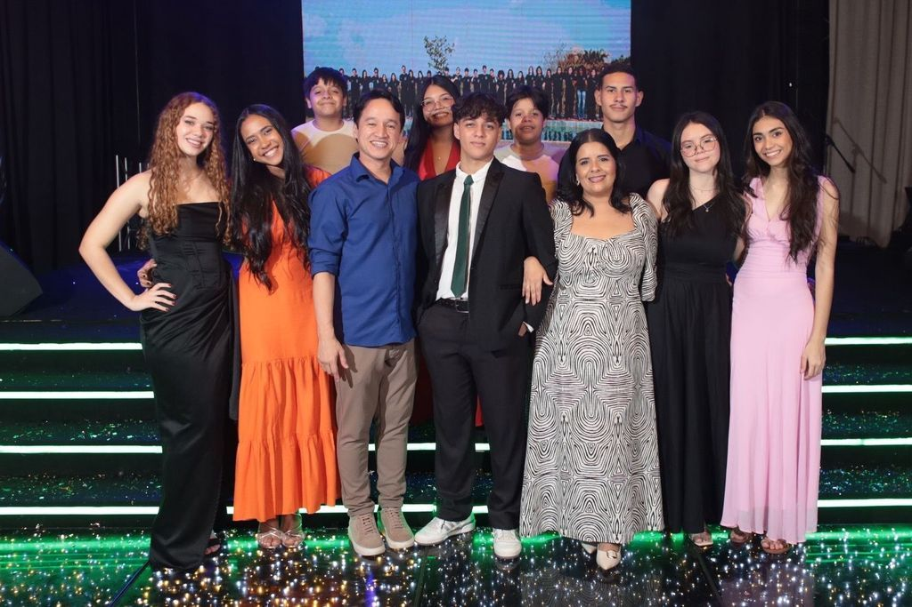
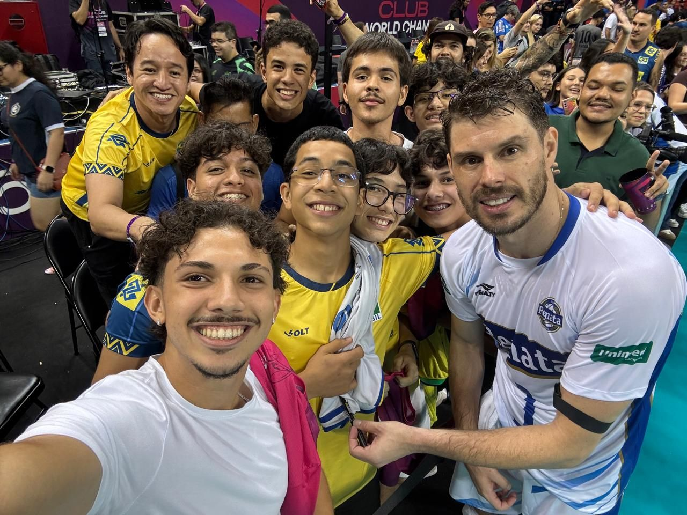
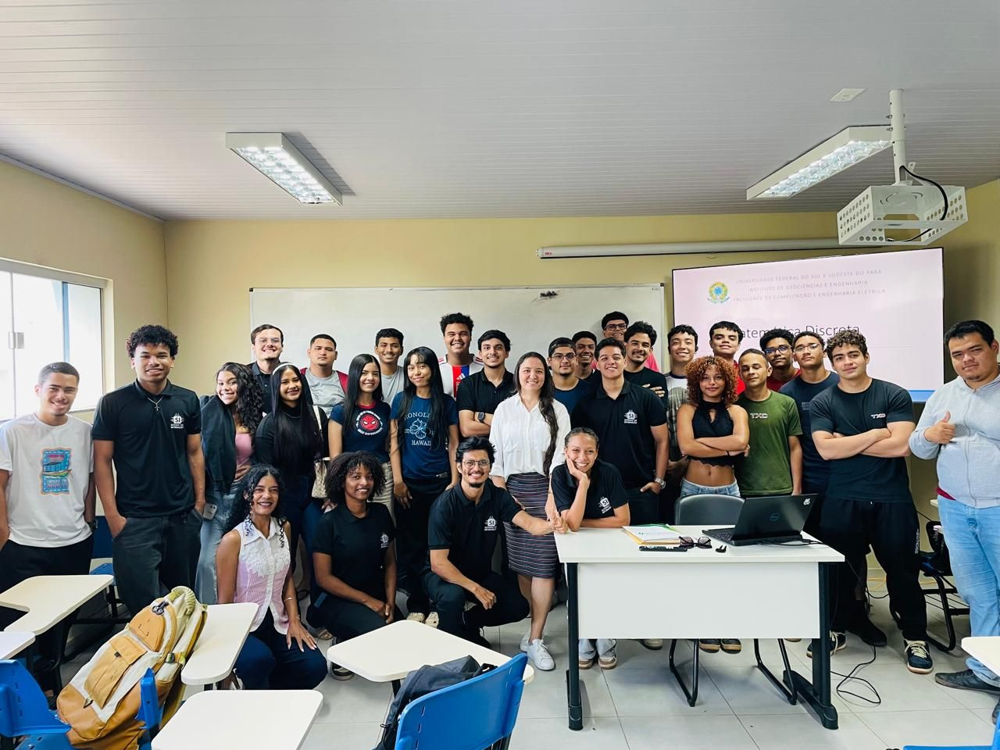

Desenvolvedor
Web & IA
Pensando em sistemas.
Construindo com IA.
Estudante de Sistemas de Informação na UNIFESSPA, fundador da lu.ricos e desenvolvedor freelance para negócios locais.

Lúcio Costa cria produtos web com IA, de lojas virtuais a agentes que pensam, buscam e respondem.
Trabalhos selecionados
Outros projetos
Sobre

Sou de Marabá, no Pará. Comecei vendendo relógios e acabei construindo a loja inteira: o site, o estoque e um assistente de IA que atende os clientes.
Hoje estudo Sistemas de Informação na UNIFESSPA e passo a maior parte do tempo entre front-end e IA aplicada: RAG, agentes com ferramentas e interfaces simples para coisas complexas. Também faço sites para negócios locais e tenho certificação Google em Suporte de TI.
Gosto de levar uma ideia do rascunho até o deploy, de aprender rápido e de trabalhar com autonomia.
Fora do código
Família, amigos, vôlei e design. É o que me move quando o editor está fechado.
Minha família é minha base. Foi com ela e com a minha fé que aprendi a levar as coisas a sério sem perder a leveza.
Na UNIFESSPA, faço parte da turma de Sistemas de Informação de 2026. É com ela que encaro Matemática Discreta, Estruturas de Dados e os primeiros projetos em equipe.
Jogo vôlei e acompanho a seleção de perto. No Mundial de Clubes de vôlei masculino em Belém, em 2025, fui com meus amigos e meu pai e conheci meus ídolos, entre eles o Bruninho, levantador da seleção brasileira.
E gosto de design: apresentações, identidade visual e interfaces. Muita coisa que eu programo começa como um rascunho visual.
- Vôlei
- Design
- Família
- Fé
- Tecnologia



NO QUE EU ACREDITO“Jesus não é apenas um caminho para se aproximar de Deus, é o único caminho.”
Linguagens & ferramentas
Experiência
Formação
Certificados
Da ideia
ao deploy.
- Aprendo rápido.
Entrego cedo. - IA como ferramenta,
pessoas como foco. - Interfaces simples
para coisas complexas.
Contato